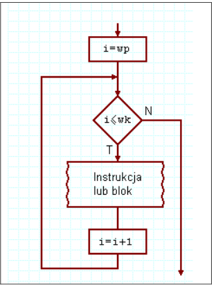
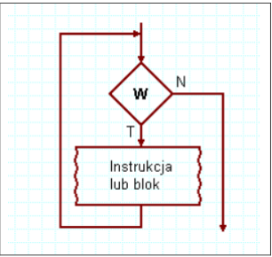
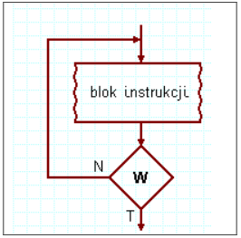

for (inicjalizacja; warunek; krok) {
// instrukcje
}
Opis:
Pętla for jest używana, gdy liczba powtórzeń jest znana. Składa się z trzech części: inicjalizacji zmiennej sterującej, warunku zakończenia oraz kroku (zmiany wartości zmiennej sterującej).
while (warunek) {
// instrukcje
}
Opis:
Pętla while sprawdza warunek przed każdym wykonaniem instrukcji. Jeśli warunek jest spełniony, instrukcje są wykonywane. Pętla może nie wykonać się ani razu, jeśli warunek początkowo jest fałszywy.
do {
// instrukcje
} while (warunek);
Opis:
Pętla do...while wykonuje instrukcje przynajmniej raz, ponieważ warunek jest sprawdzany po wykonaniu instrukcji. Pętla kończy się, gdy warunek staje się fałszywy.
